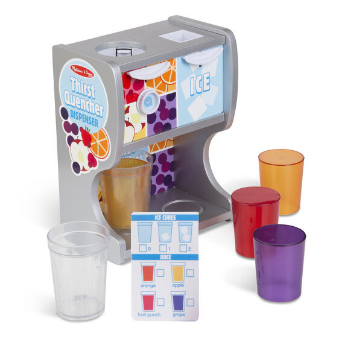
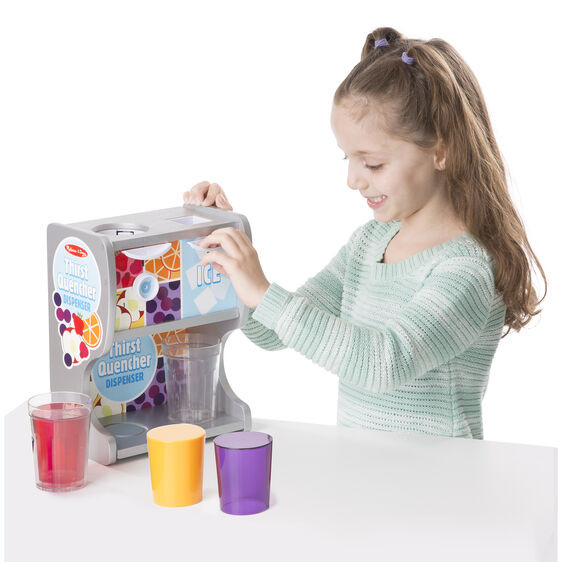

Available
Thirst Quencher Quencher
Vehicles
R500Wooden pretend play drink dispenser for play kitchens, restaurants, and more Includes dispenser, 4 juice inserts, 2 ice cubes, 2 cups, and reusable menu card Press levers and watch ice and juice drop into cups Encourages imaginative play and helps kids develop fine motor and sequencing skills 3+ years Product: 11.25
Enquire about this product
Thirst Quencher Quencher at Kids Corner KZN
Thirst Quencher Quencher is part of our Vehicles collection. Kids Corner KZN stocks toys for learning, pretend play, creative play, gifting and everyday childhood discovery in South Africa.
Browse more Vehicles toys